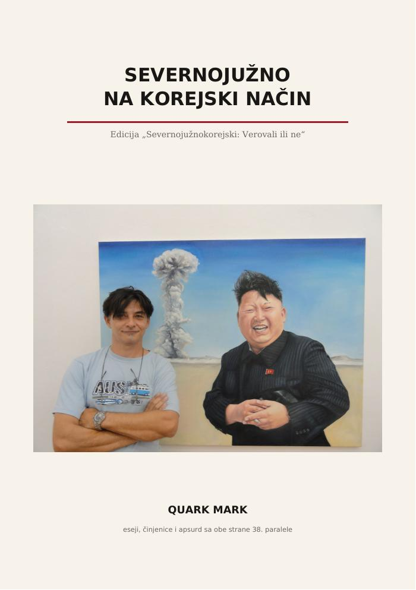

Esejistički ciklus · odabrani odlomak
Severno-južno na korejski način
Eseji, činjenice i apsurd sa obe strane 38. paralele

Esejistički ciklus Severno-južno na korejski način posmatra Korejsko poluostrvo kroz četiri priče o veri, muzici, propagandi i simbolima moći. Ovaj odlomak govori o neobičnoj pravoslavnoj crkvi u Pjongjangu.
Crkva kojoj su naknadno pronašli vernike
Vera, arhitektura i jedan planski sistem koji je kupolu završio pre parohije
Šta mislite, da li je ikada u Severnoj Koreji služena pravoslavna liturgija?
Ako mislite da nije, grdno se varate.
Ne samo da je služena nego se usred Pjongjanga nalazi prava pravoslavna crkva, sa zlatnim kupolama, zvonikom i ikonostasom, sa sve dverima i ostalim što uz jedan ozbiljan hram ide.
Jedino što u početku gotovo da nije bilo vernika.
Ali krenimo redom.
Pre nekoliko godina, u jednom sasvim običnom razgovoru, monah iz manastira čije ime neću navoditi ispričao mi je neobičnu priču. Prema njegovim rečima, neki ruski vladika posetio je Severnu Koreju i tamo ugledao fantastično lepu pravoslavnu crkvu. Hram je bio završen, ikonostas postavljen, kupole su sijale, ali unutra nije bilo nikoga.
Priča mi je zvučala kao dobra parabola o državi koja je napravila crkvu, ali je malko zaboravila vernike.
Kasnije sam proverio šta se zaista dogodilo. Ispostavilo se da je jezgro priče potpuno istinito, mada su se pojedinosti verovatno malo doterale tokom prepričavanja.
Kim Džong Il je naručio crkvu. Običan turista kupio bi magnet za frižider.
Quark Mark← Nazad na eseje